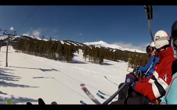

Breckenridge, Colorado
I vinterferien reiste eg, Rannveig og Svein til Breckenridge, Colorado, USA. Der møtte me Eivind og Stian, to lokale Texas-cowboyar for litt villmannspudderkøyring.
Reisa gjekk innom Washington og me fekk alle rista laus mageinnhaldet på den særs hasardiøse innflyginga som varte i ca. halvannan time. Nesten alle klarte å halde på mageinnhaldet. SAS er blant dei som flyr frå Bergen til ein skapeleg pris, og du må i tillegg betale ca. 350 kroner ekstra for å ta med ski og skiutstyr kvar veg. Pass på å få lånt deg ein skikkeleg vinterbil når du landar. Firhjulstrekk og gode dekk bør vere prioritert. Du flyr gjerne til Denver, og her kan det vere fint og vårleg, men du skal høgare opp og dei saltar like mykje her som i Bergen til tider.
Breckenridge hadde i år slete med labre snjomengder, men heldigvis for oss så kom det eit dryss nokre veker før me kom - i tillegg til jamnlege dryss medan me var der. Til vanleg er Breckenridge kjent som eit pudderhol der det ligg i the Rocky Mountains, med fjørlett pudder og store områder for å nyta dette. Endå viktigare, dei klipper ikkje opp heiskortet ditt dersom du køyrer utanfor oppmerka løyper - noko mange andre skianlegg i USA gjer. Du gjer det derimot på eige ansvar.


Breckenridge ligg halvannan time frå Denver med bil, og du køyrer gjennom mange flotte og spennande områder. Det anbefalast å stoppe for å sjå på bison på vegen. Når du først kjem fram så oppdagar du gjerne at du er på ca. 3000 meter over havet dersom du ikkje er vant til slikt. Dei øverste heisane går til ca. 4000 moh.
Me fekk blant anna oppleve å både ta ein tur på puben og stå på ski med ein viss Trygve Berge. Han er ein vossing som blei født i 1932 og har blant anna vunne NM i utfor i 1956, og deltatt i vinter OL i Cortina d'Ampezzo det same året. Sjå slutten på filmen nedanfor for bevis på at han fortsatt har ein fantastisk flott stil.
Eg har satt saman ein liten oppsummering av dei 30 GB med filmopptak som blei gjort. Nyt med måte.
Part of the Winter 2011-2012 movie. This is only the Breckenridge, Colorado part.
We had a week of skiing in some very good terrain, and after a while the conditions also got very good with fresh powder. The sun wasn't far away either. All i all - all conditions.
Skiers: Eivind Moen, Jo Bjørnar Hausnes, Rannveig Fluge, Svein Ringheim, Stian ...
Trygve Berge is also joining in at the end. He was born in 1932, and is a Norwegian alpine skier. He was born in Voss. He participated at the 1956 Winter Olympics in Cortina d'Ampezzo, where he competed in downhill. And now he's here with us.
Music credits
1: Highasakite - Son of a Bitch
2: Rival Sons - All Over the Road
3: Lana Del Ray - Born to Die (excerpt)